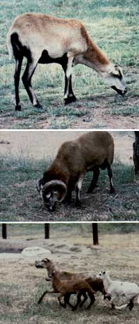

The females of this beautiful, carefree breed looks more like small deer than like ordinary sheep. ... The handsome males resemble the wild mountain longhorn, and indeed members of the species can survive in the wilderness very well... as evidenced by the thousands of untamed Blackbellies that run loose in Texas... An ewe can lamb and will usually produce twins twice a year. And, because the little ones' tails are naturally short, you won't have to have the appendages docked, as would be necessary with most domestic species.